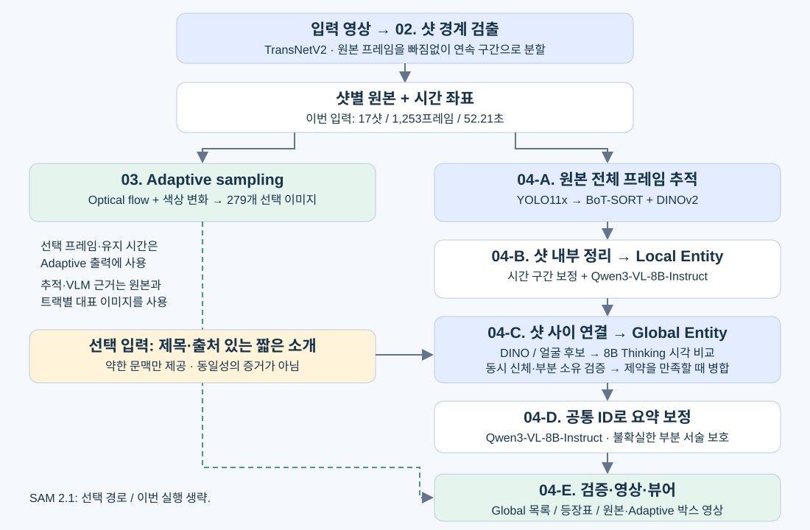

1. 전체 개념과 구조
영상 속 관측을 샷 안에서 정리하고, 샷을 넘어서 같은 실제 대상을 연결한 뒤, 공통 ID로 이야기합니다.
핵심 목표는 “누가 화면에 보였나?”와 “다른 샷의 그 대상도 같은 존재인가?”를 함께 해결하는 것입니다. 검출 박스 하나를 곧바로 인물 하나로 확정하지 않습니다.

설명 기준: 2026-10-13 최종 코드 및 outputs/sintel_global_v2 결과. 범용 설계와 이 영상에서 확인된 성능을 구분합니다. 최종 catalog SHA-256: c8108329db5ed8a721e88030cbc1db8c302452beb816ef4f39cf8fdc97c9bef3
2. 컴포넌트별 요약
| 단계 | 실제 모델·알고리즘 | 받는 것 → 만드는 것 |
|---|---|---|
| 02 샷 분할 | TransNetV2 + 전환/밝기 규칙 | 원본 → 연속 샷·원본 프레임 좌표 |
| 03 샘플 선택 | Farneback flow + RANSAC + RGB 차이 | 샷 → 선택 이미지·유지 구간 |
| 04 검출·추적 | YOLO11x + BoT-SORT + DINOv2-small | 원본 모든 프레임 → 박스·임시 트랙 |
| 04 구간 보정 | 컷/검은 전환·외형/박스 변화 규칙 | 섞였을 가능성이 있는 트랙 → 분리 후보 |
| 04 샷 내부 이해 | Qwen3-VL-8B-Instruct | 전체 장면 + crop → Local 목록·초기 사건 |
| 04 마스크 (선택) | SAM 2.1 Hiera Small | 트랙 → 전경 마스크·crop. 이번에는 생략 |
| 04 후보 검색 | DINOv2 + 설명 겹침 + YuNet/SFace | Local 목록 → 비교할 쌍의 우선순위 |
| 04 전역 동일성 | Qwen3-VL-8B-Thinking | 두 그룹의 여러 모습 → 동일/다름/불확실 |
| 04 동시 신체 검토 | Qwen3-VL-8B-Instruct | 동일 프레임의 두 대상 → 물리적으로 한 몸/두 몸 |
| 04 요약·내보내기 | Instruct + 결정적 참조·시간 검사 | Global 목록 → 공통 ID 요약·영상·뷰어 |
꼭 구분해야 할 네 가지 단위
| 단위 | 뜻 | 왜 다음 단계가 필요한가? |
|---|---|---|
| Observation | 어느 프레임의 검출 박스 하나 | 몸 전체, 얼굴, 팔, 오검출이 모두 섞일 수 있음 |
| Track | 시간순으로 이어진 관측 묶음 | 가림으로 끊기거나 다른 대상으로 넘어갈 수 있음 |
| Local Entity | 한 샷에서 같은 대상으로 판단한 트랙 묶음 | 다음 샷에서 같은 대상인지 아직 모름 |
| Global Entity | 여러 샷의 Local Entity를 연결한 영상 내 ID | 근거가 부족하면 분리·미확정 상태 유지 |
shot_A:T01,T03 → shot_A:L01, shot_B:L02가 시각 비교를 통과하면 둘 다 G0001을 참조합니다. ID는 영상 안의 식별자이며 실명이나 다른 영상에서도 유지되는 인물 번호가 아닙니다.
3. 디테일 — 샷 분할과 샘플링
3.1 처음에 샷은 어떻게 나누었나?
02_shot_boundary_detection의 TransNetV2가 프레임 주변의 영상 변화를 보고 컷·점진 전환의 확률을 냅니다. CPU에서 실행하며, 전환 확률과 밝기 정보를 이용해 안정 구간과 전환 구간을 정합니다. 기본 확률 임계치는 0.5, 짧은 샷 기준은 0.25초입니다.
- 하드 컷 또는 페이드·디졸브 후보 구간을 찾습니다.
- 두 안정 장면 사이 전환의 중간을 분할 지점으로 잡습니다. 한 프레임 하드 컷은 구현 규칙에 따라 이전 장면 끝으로 배정합니다.
- 전환 앞부분은 이전 샷, 뒷부분은 다음 샷에 포함합니다. 시작·끝의 검은 화면도 남깁니다.
- 최종 구간이
[0, 전체 프레임 수)를 누락·중복 없이 덮는지 검사하고 MP4로 저장합니다.
결과는 의미상의 “사건 단위”가 아니라 시각적 전환 기준의 샷입니다. 카메라가 바뀌어도 같은 인물일 수 있으므로 후속 Global 연결이 필요합니다. 04에서도 놓친 내부 컷과 대상 교체를 다시 검사합니다.
첫 샷 시작 = 0 이전 샷 end_frame_exclusive = 다음 샷 start_frame 마지막 샷 끝 = 1,253 원본 시간 = (샷 start_frame + 샷 내부 frame) / 24
02 방식은 현재 코드·README로 확인했습니다. 이번 04 개선에서는 기존 17샷 메타데이터를 재사용했고 02를 다시 추론하지 않았습니다. 이 워크스페이스에는 원래 02 실행 폴더가 없어 당시 옵션 전체와 처리 시간은 재확인하지 못했습니다.
3.2 Adaptive sampling은 무엇을 줄이나?
03은 폭 256px의 이미지로 모든 프레임 사이 Farneback optical flow를 계산합니다. RANSAC으로 전역 이동·회전·확대를 추정해 카메라 움직임을 보정하고, 남은 움직임과 정렬된 RGB 변화량을 누적합니다. 보정의 지지가 부족하면 보정하지 않습니다.
step = 2.0 × residual_flow + 1.0 × visual_change + 0.15 × camera_motion 누적값 += 현재 step과 0.12초 EMA를 반씩 결합 누적값 ≥ 0.08 → 샘플 선택 → 누적값 초기화
보통 최대 10fps, 최소 1fps에 해당하는 간격으로 선택합니다. 큰 순간 변화와 첫·마지막 프레임 보존은 상한의 예외입니다. 마지막 선택 이미지와 크게 달라져도 선택합니다. 4×4 영역 통계로 작은 움직임이 전체 평균에 묻히는 현상을 줄입니다.
코드: 02/gradual.py · split_shots.py, 03/sampling.py. 자세한 수식: 03_adaptive_sampling/ADAPTIVE_SAMPLING_GUIDE.md. 위 02/03 표기는 해당 단계 폴더의 약칭입니다.
4. 디테일 — 각 샷에서 무엇을 하나?
4.1 위치를 찾고 시간으로 연결
YOLO11x가 원본 프레임 전체와 작은 대상용 타일에서 박스를 검출합니다. 실제 dense 설정은 검출 크기 1280, 후보 confidence 0.08, 일반 새 트랙 시작 0.40, 타일 새 트랙 시작 0.60입니다. 타일은 640px, 25% 겹침이며 주기적 탐색과 작은 대상 관측에 따라 실행합니다.
BoT-SORT가 위치·운동 예측과 DINOv2-small 외형 특징으로 프레임 사이 박스를 연결합니다. 샷마다 추적기를 초기화하고 잠정 검출 클래스와 무관하게 연결합니다. 이 경로의 카메라 운동 보정(GMC)은 꺼져 있습니다. 03의 flow 카메라 보정과는 별개입니다.
관측이 없는 구간은 “미관측”으로 남깁니다. 추적기가 예측한 위치를 실제로 봤다는 증거로 만들지 않습니다. 이번에는 1,253프레임에서 3,594회 타일 탐색을 추가했고, 원시 트랙 117개가 만들어졌습니다.
4.2 잘못 이어진 트랙을 먼저 끊기
temporal_track_repair.py가 컷·검은 전환·시간 간격, 갑작스러운 외형 변화와 장기간 누적된 DINO/박스 변화를 검사합니다. 다른 대상이 한 트랙에 섞였을 가능성이 있으면 구간을 나눕니다. 원래 관측을 보존하며, 같은 사람을 과하게 나눴다면 후속 시각 비교로 다시 연결할 수 있습니다.
4.3 Local Entity를 만드는 VLM 검토
Qwen3-VL-8B-Instruct에 원본 전체 장면과 시간순 대상 crop을 보여 줍니다. 추적에서 장면 대표 이미지 최대 10개, 트랙 대표 관측 최대 8개를 준비하며, 실제 프롬프트는 보드·페이지별로 입력량을 제한합니다. 모든 1,253프레임을 한 번에 VLM에 넣지 않습니다.
- 각 트랙을 사람·동물/생물·물체·불명으로 재해석합니다.
- 독립 개체인지, 신체 부분인지, 착용물인지 판단합니다.
- 같은 샷의 끊어진 트랙들을 Local ID에 배정하거나 오검출로 제외합니다.
- 동시 관측·소유관계 모순을 다시 검토합니다. 사람↔동물 분류 충돌은 대상 하나를 강조한 최대 3프레임으로 재검토하며 확인된 트랙만 수정합니다.
- 초기 사건과 요약을 저장합니다. 미해결은 경고로 남깁니다.
이번 최종 검토 대상은 분할 후 162트랙이며, 113개 배정·49개 제외·미검토 0개입니다. “검토됨”은 “모두 정답”을 의미하지 않습니다. 최종 Local 대상은 37개입니다.
4.4 SAM은 어디에 있나?
선택 경로의 SAM 2.1 Hiera Small은 트랙별 전경 마스크를 정·역방향으로 추적하고 관측 근거와 대조합니다. 배경을 줄인 crop을 만드는 데 유용하지만, 마스크 자체가 동일 인물의 증거는 아닙니다. 이번 결과는 mask_refinement=false로 이 단계를 생략하고 원본 박스 crop을 사용했습니다. 새 실행 기본값은 SAM 사용이므로 이번 구성과 맞추려면 --skip-mask-refinement를 지정합니다.
코드: shot_tracking.py · temporal_track_repair.py · story_semantics.py · local_identity_audit.py · local_classification_audit.py · mask_refinement.py. Dense 설정은 dense_tracking/bundle.json 기준입니다. 공통 Settings의 tracking_fps=10 같은 값이 이 dense 경로의 실제 처리 fps를 뜻하지는 않습니다.
5. 디테일 — 샷 사이를 어떻게 합치나?
검색 → 두 그룹 시각 비교 → 근거·제약 검증 → 병합 또는 보류를 반복합니다.
5.1 처음부터 답을 가정하지 않기
기본 초기화는 각 Local Entity를 독립 임시 Global 그룹으로 놓습니다. 예컨대 겨울옷 정면, 망토 뒷모습, 액션 장면의 주인공은 서로 다른 출발점입니다. 영화의 등장인물 수나 이름으로 미리 몇 그룹만 만들지 않습니다.
5.2 비교할 후보 찾기
DINO crop 특징의 코사인 유사도, 설명 단어 겹침, 선택적 SFace 얼굴 유사도와 샷 경계 연속성으로 우선순위를 계산합니다. YuNet은 얼굴을 찾고 선명한 얼굴 확대를 고르는 데 사용합니다. 같은 종류의 낮은 유사도 후보도 검토 가능하게 남깁니다.
기본 후보 점수 = 2×외형 유사도 + 2×max(0, 얼굴 유사도) + 설명 겹침 추가 우선순위: 두 person +0.25 / 같은 샷 부분·착용물 +0.4 / 경계 연속성 +2
이 수치는 검토 순서용 휴리스틱이며 학습된 확률이나 자동 병합 임계치가 아닙니다. 부분과 소유자의 경우 같은 프레임·겹침 등 추가 후보 자격을 적용합니다. 서로 다른 종류도 강한 외형 후보라면 오분류 가능성을 검토할 수 있습니다.
5.3 여러 모습을 함께 보는 8B Thinking 비교
왼쪽·오른쪽 그룹 각각 최대 3개 대표 view를 고릅니다. 이미 연결된 서로 다른 샷의 모습을 우선하고, 한 샷뿐이면 다양한 시점을 사용합니다. 원본 장면과 crop을 함께 표시해 Qwen3-VL-8B-Thinking이 same / different / uncertain과 근거 view 번호를 반환하게 합니다.
모델이 임의 ID를 만들도록 맡기지 않고, 코드가 view 번호를 실제 Local ID·원본 프레임에 결속합니다. 완료된 reasoning 뒤의 최종 JSON만 채택합니다. 일반 비교 프롬프트에는 기존 Local 외형 설명을 넣지 않아 앞선 설명 오류의 반복을 줄입니다. 머리·체형·의상·장비의 구체적인 조합을 보며, 얼굴 미노출·조명·복장 차이만으로 영구적인 다른 사람 판정을 만들지 않습니다.
5.4 잘못 합치는 것을 막는 조건
- 동시 독립 신체: 같은 프레임의 분리된 전신 박스가 반복되면 단일 원본 장면에 두 박스를 표시합니다. Instruct가 보이는 몸 수와 구분 근거를 검토합니다. 확인된 두 독립 신체는 그룹 전체의 병합금지 제약이 됩니다. 박스 위치 차이만으로 확정하지 않습니다.
- 부분·착용물: 같은 원본 프레임에서 관측된 소유자 박스와 부분 박스의 절반 이상이 겹쳐야 검토 후보가 됩니다. 이어서 직접적인 신체 연결 근거를 요구합니다. 겹침만으로 합치지 않습니다.
- 추이적 모순: A=B와 B=C가 있어도 A와 C의 확정된 독립 신체 제약이 있으면 그대로 한 그룹으로 합칠 수 없습니다. 내부 모순이 드러난 그룹은 Local 단위로 재분리합니다.
- 불확실·실패: 연결을 보류하고 예산 내 다른 후보를 검토합니다. 샷 간 차이 판단은 재검토 가능하며, 확인된 동시 신체 제약과 구분합니다.
따라서 정면 A ↔ 측면 B ↔ 뒷모습 C가 각각 근거를 통과하면 세 모습이 한 ID가 될 수 있습니다. “빨간 머리면 모두 같다” 같은 규칙은 없습니다.
코드: global_identity.py · boundary_identity.py · view_quality.py. 근거: identity_reconciliation/audit.json 및 배치별 비교 이미지·결정 JSON. 현재 일부 부분의 소유자는 이 보수적 조건 때문에 미확정으로 남습니다.
6. 디테일 — 요약·출력·실행 제어
6.1 Global ID로 다시 이야기하기
Instruct에 Global 목록·앞뒤 사건·실제 장면 이미지를 주고 최대 10샷 단위로 요약을 보정합니다. 같은 대상의 이름과 ID를 맞추되, 초기 요약도 보존합니다. 사건에는 주체·행동·상대·시각·근거가 붙습니다. 보정된 요약을 다시 동일성의 증거로 사용하는 순환은 없습니다.
소유자를 모르는 부분만으로 구성된 그룹은 identity_scope=part_owner_unresolved로 표시합니다. 이 ID를 별도 사람처럼 서술한 요약은 원문을 보관하고 “관측된 대상 목록”으로 대체합니다. 이번에는 3샷에 적용했습니다. 형식 검증으로 모든 자연어 내용의 정확성을 보장할 수는 없습니다.
6.2 출력 파일을 읽는 순서
| 파일 | 확인할 내용 |
|---|---|
entities.json | 뷰어용 최종 목록·대표 이미지·등장 샷 |
global_entities.json | Local → Global 연결과 전역 판정 정보 |
local_entities.json | 샷 내부 대상·트랙 배정·초기 해석 |
observations.json | 실제 박스·원본 프레임·Global ID를 역추적하는 근거 |
story.json | 샷별 보정 요약·사건·미확정 및 원문 |
entity_shot_presence.csv | Entity × 샷 등장표. 0은 “관측 없음” |
quality.json | 구조 검증과 미해결 경고 |
regression_all.json | 23개 원본 박스의 제한된 동일성 정답 평가 |
execution_history.json / qwen_budget.json | 재실행 시간과 실제 모델 생성 원장 |
원본 박스 영상은 1,253프레임을, Adaptive 박스 영상은 279개 선택 이미지와 유지 시간을 사용합니다. 둘 다 52.208333초를 보존하며 이번 04 영상 출력은 무음입니다. 다른 시점으로 이동해도 원본 시간축에서 비교할 수 있습니다.
6.3 반복 실행은 어떻게 통제하나?
Python이 정해진 단계를 제어하는 파이프라인입니다. 모델이 자유롭게 도구를 부르는 에이전트 구조가 아닙니다. 입력·설정·모델 revision·프롬프트·이미지가 일치하는 응답만 캐시로 재사용하고, 내용이 바뀌면 의존 결과를 재검증합니다.
새 실행 기본 예산은 실제 생성 80회, 전역 집중 검토 32회입니다. 재시도·실패·중단도 누적 원장에 남고, 캐시 적중은 새 생성에 포함하지 않습니다. 이번 개발에서는 명시적으로 예산을 늘려 406/410회까지 사용했습니다. 영상 길이와 등장 대상 수가 커지면 기본 예산으로 전체 검토를 끝내지 못할 수 있습니다.
6.4 실제 모델 상태
RTX 5080 16GB, PyTorch 2.7.1+cu128에서 실행했습니다. 주 Qwen 호출은 NF4 4bit 가중치/BF16 연산입니다. Thinking의 로컬 저장본은 공식 모델을 양자화해 저장한 것으로, Sintel로 추가 학습하지 않았습니다.
Instruct revision: 0c351dd01ed87e9c1b53cbc748cba10e6187ff3b
Thinking revision: 92f3c4b4feadd3a016ef468d103bb5f58b2a2c6b
DINOv2-small revision: ed25f3a31f01632728cabb09d1542f84ab7b0056
7. 시간과 검증 — 무엇을 측정했나?
이번 개발 기록의 경과 시간은 6시간 16분 40초입니다. 새 영상 1회 분석 성능 측정값은 아닙니다.
| 시간의 종류 | 실제 기록 | 포함 범위 |
|---|---|---|
| 04 실행 이력의 시작~끝 | 6시간 16분 40초 | 2026-10-13 09:56:08~16:12:48 KST. 사이의 개발·준비·대기 포함 |
| 기록된 분석 프로세스 시간 합 | 3시간 23분 56초 | 42번 호출. 수정 후 반복·실패·중단·캐시 실행 포함 |
| 모델 요청 구간 시간 합 | 3시간 20분 58초 | 406번 생성 시도. 진단 호출도 포함. 순수 GPU 커널 시간은 아님 |
| 마지막 내보내기만 | 약 64초 | 기존 분석에서 영상·결과 저장. 전체 분석 시간이 아님 |
위 세 합계는 측정 범위가 달라 서로 더하면 안 됩니다. 모델 요청은 대체로 분석 프로세스 내부에 포함되며, 별도 진단도 있습니다. 첫 기록 이전의 환경 작업, 02·03의 과거 실행, 마지막 이후의 보고서·브라우저 검수 시간은 위 경과 시간에 모두 포함되지 않습니다. 따라서 대화 전체 작업 시간의 정확한 합계는 알 수 없습니다.
단계별 누적 프로세스 시간
| 단계 | 실행 횟수 | 시간 합 |
|---|---|---|
| 원본 추적 | 1회 | 3분 34초 |
| Local 검토·보정 | 13회 | 24분 58초 |
| Global 비교·병합 | 20회 | 2시간 34분 4초 |
| 요약 보정 | 5회 | 18분 7초 |
| 내보내기 | 3회 | 3분 13초 |
원본 추적은 한 번 약 3분 34초였습니다. Global은 20번 반복한 누적값입니다. 최종 Global 재실행 약 8.5초는 기존 비교 응답 41건을 재검증한 캐시 실행이므로 Thinking을 처음 실행하는 속도로 해석하면 안 됩니다.
이번 결과에서 확인한 것
- 주인공의 10개 검수 샷이 G0001로 통합되고 노인·공격자는 분리 유지. 원본 23개 박스 기반 평가이며, 추가 shot9 검토도 같은 ID를 확인했습니다. 실제 G0001 관측은 11샷입니다.
- 3개 회귀 평가 통과. 이전 기능 검수에서 494개 테스트 + 122개 subtest 통과. 이 수치는 코드 검사 결과이며 영상 정확도 %가 아닙니다.
- 전체 17샷, Global 14개. 두 영상 시간축과 브라우저 실제 재생 확인.
- 동일 ID의 서로 다른 동시 박스 경고 93건, 일부 동물·부분·소유관계 미해결. 이는 93개 확정 오답이라는 뜻은 아닙니다. 전체 품질은 needs_review입니다.
근거: execution_history.json · qwen_budget.json · run_timing.json · manual_review/final_findings.json · regression_all.json · viewer_validation.json. 원래 사용자 버전의 동일 조건 정답 평가가 없어 개선 전후 전체 정확도 차이는 산출하지 않았습니다.
8. 다른 영상에도 가능한가?
추론 코드는 범용 구조입니다. 모든 종류의 영상에서 같은 정확도를 낸다는 검증은 아직 없습니다.
8.1 Sintel에 묶인 부분과 묶이지 않은 부분
| 구분 | 현재 상태 |
|---|---|
| 코드의 인물·샷 규칙 | “붉은 머리면 병합”, 특정 샷·ID 수동 연결, 고정 등장인물 수 규칙 없음 |
| 모델 가중치 | 범용 사전학습 모델. Sintel 추가 학습 없음 |
| 영상 배경 문맥 | 입력 JSON에 제목·animated trailer·출처 있는 짧은 소개. 다른 입력에서 바꾸거나 생략 가능 |
| 수동 정답 | Sintel 전용 평가 fixture는 존재. 추론·후보 검색·병합의 입력으로 사용하지 않음 |
| 개발 검증 | Sintel의 실패 사례를 보며 범용 규칙을 개선. 다른 장르 정답 세트로 일반화 성능을 확인한 상태는 아님 |
사용한 소개는 소녀가 다친 어린 용을 돌보고, 헤어진 뒤 찾아 나선다는 짧은 문맥입니다. 감독의 작품 소개를 출처·수집 시각·해시와 함께 입력에 보관했습니다. “이 박스는 주인공이다”라는 매핑은 주지 않았습니다. 소개가 없어도 같은 구조로 동작합니다.
8.2 “어떤 종류의 영상”에서 주의할 지점
- 검출 범위: YOLO의 학습 범주 밖 생물·추상 도형·특수 물체는 누락/오분류될 수 있습니다. VLM이 설명을 잘해도 실제 박스 누락을 모두 복구하지는 못합니다.
- 외형 모호성: 군중·유니폼·쌍둥이·작은 얼굴·심한 가림·변신은 연결/분리 판단이 어려워집니다. 동시 신체 규칙도 거울·화면 속 화면·콜라주에서는 별도 검증이 필요합니다.
- 길이: Local 대상 수가 커지면 비교 후보가 크게 증가합니다. 예산 80/32는 짧은 영상용 출발 설정이며 장편의 비용·정확도는 별도 측정해야 합니다.
- 입력 형식: 현재 02/03의 지원 경로는 CFR(고정 FPS)이며 03은 짝수 해상도를 요구합니다. VFR을 그대로 처리한다고 보장하지 않습니다.
- 이해 범위: 이번 파이프라인은 시각 근거 중심입니다. 오디오 화자·대사·음악을 통합해 사건을 이해하는 시스템은 아닙니다.
8.3 다른 영상 실행 순서
아래는 저장소 루트에서 실행하는 예입니다. 출력은 새 폴더를 사용하고 실제 영상 경로를 넣습니다. 이번 검증 구성과 맞추기 위해 SAM 생략을 명시했습니다.
./02_shot_boundary_detection/run.sh /path/to/video.mp4 --output /path/to/new_shots ./03_adaptive_sampling/run.sh --input-list /path/to/new_shots/shots.json --output /path/to/new_adaptive ./04_entity_extraction/run.sh --input /path/to/new_adaptive --output /path/to/new_result --original-video /path/to/video.mp4 --skip-mask-refinement ./04_entity_extraction/visualize.sh /path/to/new_result
문맥이 필요하면 video_context.py --title … --media-type … --url … --output …로 별도 생성하고 04에 --context /path/to/video_context.json을 전달합니다. 타 영상에 Sintel 문맥·평가 파일·출력 캐시를 복사하지 않습니다. 큰 영상에서는 생성 예산을 사전에 정하고, 대표 정답 샷으로 false merge와 missed merge를 함께 확인해야 합니다.
9. 실제 결과로 공부하는 순서
9.1 뷰어 열기
cd /home/hayeon/3r_video/04_entity_extraction ./visualize.sh
최근 완료 결과를 outputs/latest_run.json에서 찾아 http://localhost:5004로 제공합니다. 현재는 sintel_global_v2입니다. 원격 VS Code에서는 Ports 탭에서 5004를 전달하세요. 뷰어 상단 전체 구조 학습 보고서와 학습 PDF 링크로 이 문서를 열 수 있습니다.
# 특정 결과를 지정하거나 포트를 바꾸기 ./visualize.sh outputs/sintel_global_v2 --port 5005 # 저장소 루트에서도 실행 가능 ./04_entity_extraction/visualize.sh
9.2 하나의 연결을 거꾸로 따라가 보기
- 뷰어에서 G0001을 검색해 겨울옷 정면·뒷모습·다른 거리의 이미지를 비교합니다. 샷 버튼으로 실제 영상을 확인합니다.
global_entities.json에서 이 ID에 속한 Local들을 찾습니다. Global은 원본을 새로 생성한 것이 아니라 Local들을 가리키는 연결입니다.local_entities.json에서 Local의 트랙을 찾고observations.json의 원본 프레임/박스를 확인합니다.identity_reconciliation/의 비교 이미지·결정 JSON에서 어떤 두 view가 동일하다고 판단됐는지 봅니다.- 노인·공격자와의 분리, 소유자 미확정 부분도 확인합니다. “더 많이 합쳤다”보다 “맞게 합치고 다르면 남겼다”가 중요합니다.
9.3 코드 읽기 지도
| 궁금한 질문 | 먼저 볼 코드 |
|---|---|
| 처리 순서는 누가 정하나? | story_pipeline.py |
| 원본 경로가 바뀌면 어떻게 하나? | input_media.py |
| 박스·트랙은 어떻게 만드나? | shot_tracking.py |
| 샷 안에서 무엇을 묻나? | story_semantics.py, 두 local_*_audit.py |
| 왜 합쳤거나 안 합쳤나? | global_identity.py |
| 소개문은 어디까지 영향을 주나? | video_context.py, 비교 프롬프트 |
| 화면과 시간은 어떻게 저장하나? | story_export.py, viewer_server.py |
① 이 박스는 실제 무엇의 관측인가?
② 다른 모습과 같다고 연결할 원본 근거가 있는가?
③ 그 연결을 반박하는 동시 개체·소유관계 근거는 없는가?
범용성은 특정 영화 이름을 코드에서 빼는 것과, 다양한 영상에서 실제로 정확한 것이 모두 필요합니다. 이번에는 전자를 지키면서 Sintel 주인공 문제를 검증했습니다. 후자의 범위를 넓히려면 다른 장르의 독립 정답과 새 실행 측정이 필요합니다.